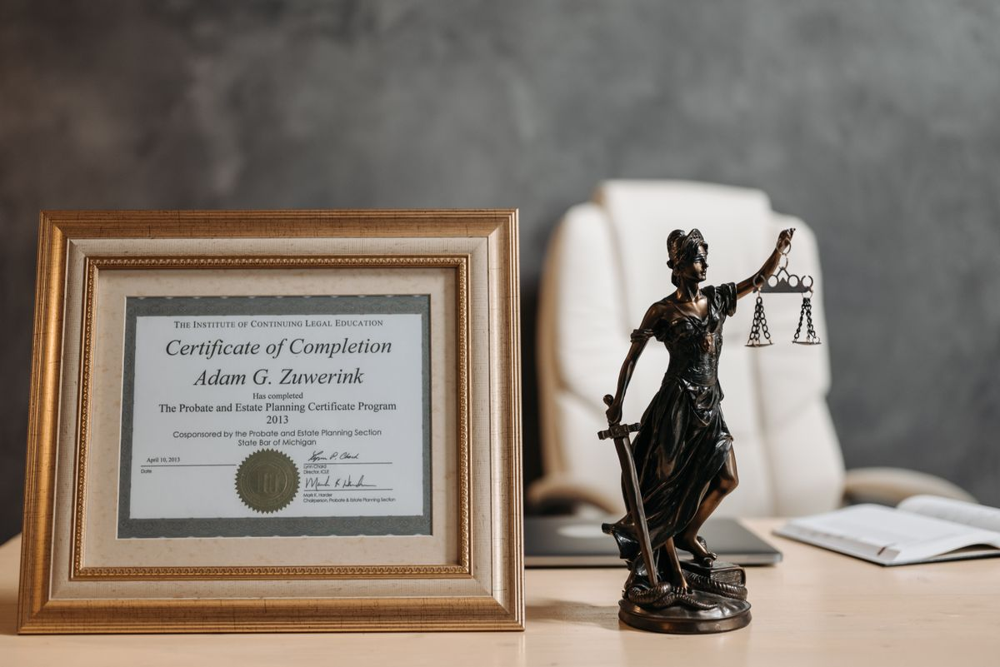
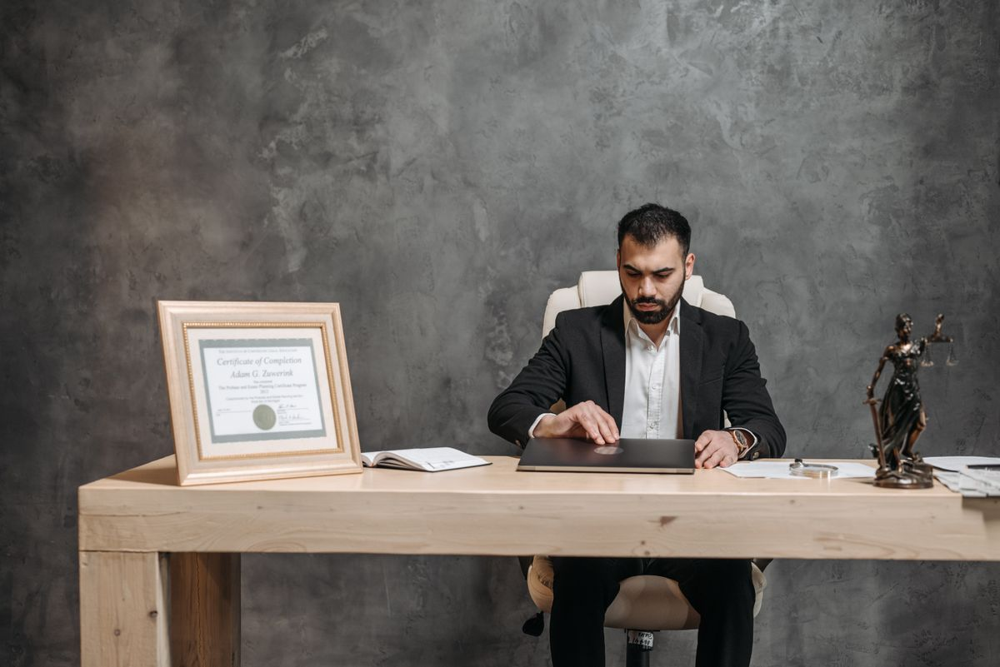

دعاوی حقوقی
مطالبه طلب و خسارت، فسخ و ابطال قرارداد، اختلافهای قراردادی و سایر دعاوی حقوقی در مراجع قضایی.
شیما زندجو، وکیل پایه یک دادگستری و مشاور حقوقی، استاد دانشگاه و عضو کانون وکلای دادگستری مرکز؛ مشاوره و پذیرش وکالت پروندههای حقوقی، ملکی، کیفری، خانواده، ارث، طلاق، مهریه و ثبتی — در دفتر نارمک، میدان نبوت. درخواست مشاورهتان را همین حالا آنلاین ثبت کنید.
در دفتر وکالت شیما زندجو، پروندههای حقوقی، ملکی، کیفری، خانواده، ارث و ثبتی با مشاوره شفاف و پیگیری دقیق دنبال میشوند. موضوع پروندهتان را انتخاب کنید و درخواست مشاوره بدهید.
مطالبه طلب و خسارت، فسخ و ابطال قرارداد، اختلافهای قراردادی و سایر دعاوی حقوقی در مراجع قضایی.
خلع ید، تخلیه، اجرتالمثل، تنظیم و ابطال سند، سرقفلی و اختلافهای مالک و مستأجر.
وکالت در جرایم مالی، کلاهبرداری، خیانت در امانت، جعل و سایر دعاوی کیفری در مراجع بدوی و تجدیدنظر.
طلاق، مهریه، نفقه، حضانت، تقسیم ترکه و اختلاف بین وراث؛ با رویکردی آرام و محرمانه.

تنظیم و ابطال سند، افراز و تفکیک، رفع اختلافهای ثبتی ملک و پیگیری امور سند در اداره ثبت.
مشاوره حقوقی در همه دعاوی؛ تنظیم دادخواست، شکوائیه، لایحه و انواع قرارداد.
شیما زندجو وکیل پایه یک دادگستری، مشاور حقوقی و استاد دانشگاه است؛ ترکیبی از پشتوانه علمی حقوق و تجربه عملی در دادگاهها — در دفتر نارمک، میدان نبوت.
پروانه پایه یک دادگستری و تدریس حقوق در دانشگاه؛ پروندهتان را وکیلی با پشتوانه علمی و عملی همزمان پیگیری میکند.
عضویت در کانون وکلای دادگستری مرکز، تهران؛ وکالت در کلیه مراجع قضایی.
پروندههای حقوقی، ملکی، کیفری، خانواده، ارث و ثبتی؛ از مشاوره تا پیگیری در مراجع قضایی.
دسترسی آسان از شرق تهران؛ برای هماهنگی جلسه مشاوره تماس بگیرید یا در واتساپ پیام بدهید.
جلسه مشاوره در فضایی آرام و محرمانه؛ پروندهتان با دقت بررسی میشود و مسیر حقوقی آن شفاف توضیح داده میشود.

در فرم مشاوره، موضوع پرونده و مشخصات تماس را ثبت کنید.
با شمارهای که ثبت کردهاید تماس میگیریم و مسیر حقوقی پرونده را شفاف توضیح میدهیم.
با عقد قرارداد وکالت، پیگیری پروندهتان در مراجع قضایی آغاز میشود.
تهران، نارمک، میدان نبوت، ابتدای خیابان جانبازان شرقی (گلبرگ شرقی)، خیابان برادران مصطفوی، پلاک ۷، ساختمان نوید، طبقه ۴، واحد ۱۷.
دعاوی حقوقی، ملکی، کیفری، خانواده، ارث، طلاق، مهریه و امور ثبتی؛ مشاوره و پذیرش وکالت در همه این حوزهها انجام میشود.
۰۹۱۲۲۰۸۸۷۳۸ و ۰۹۱۹۶۰۸۵۴۵۶ (موبایل) و ۰۲۱۷۷۹۵۷۶۰۵ (تلفن دفتر). برای پیام در واتساپ هم میتوانید از شماره موبایل استفاده کنید.
فرم درخواست مشاوره همین صفحه را پر کنید یا با شمارههای دفتر تماس بگیرید؛ برای هماهنگی جلسه مشاوره با شما تماس میگیریم.
بله؛ ایشان وکیل پایه یک دادگستری و مشاور حقوقی، استاد دانشگاه و عضو کانون وکلای دادگستری مرکز هستند.
فرم را پر کنید؛ برای بررسی پرونده و هماهنگی جلسه مشاوره با شما تماس میگیریم. اگر ترجیح میدهید مستقیم صحبت کنیم، تماس بگیرید:
۰۹۱۲۲۰۸۸۷۳۸ واتساپ: ۰۹۱۲۲۰۸۸۷۳۸ اینستاگرام: @vakil.shimazandjoo ایمیل: shimazandjoo1398@gmail.com